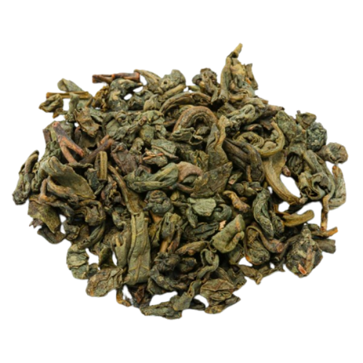

The most popular teas
- Black tea:
- 1. Earl gray
- 2. Assam Tea
- 3. Darjeeling Tea
- Green tea:
- 1. Sencha
- 2. Matcha
- 3. Dragon Well
- White tea:
- 1. White Peony (Bai Mudan)
- 2. Silver Needle (Baihao Yinzhen)
- 3. Darjeeling White
Black tea

Black tea
is one of the most widely consumed teas globally.
It undergoes full oxidation during processing, which gives it a robust flavor and dark color.
Popular varieties include Assam, Darjeeling, and Earl Grey.
Black tea is known for its boldness and is often enjoyed with or without milk and sugar.
It's a comforting choice for many tea enthusiasts, offering a rich and invigorating experience.
Green tea

Green tea
revered for its health benefits, is minimally processed, preserving its natural color
and antioxidants. With origins in China, Japan, and other Asian countries,
green tea comes in various types such as Sencha, Matcha, and Dragon Well. It boasts a fresh,
grassy taste and a lighter color. Often consumed without additives, green tea is celebrated
for its delicate flavor profile and potential health-promoting properties.
White tea

White tea
may refer to one of several styles of tea which generally
feature young or minimally processed leaves of the Camellia sinensis plant.
Currently there is no generally accepted definition of white tea and very little international
agreement; some sources use the term to refer to tea that is merely dried with no additional processing,
some to tea made from the buds and immature tea leaves picked shortly before the buds have fully
opened and allowed to wither and dry in natural sun, while others include tea buds and very
young leaves which have been steamed or fired before drying.
| Tea comparison table | |||
|---|---|---|---|
| Parametr | Black Tea | Grean Tea | White Tea |
| Water Temperature | 90-95°C | 75-80°C | 80-85°C |
| Brewing Time | 3-5 minutes | 2-3 minutes | 4-6 minutes |
| Caffeine Content | 40-70 mg per 8 oz | 20-45 mg per 8 oz | 15-30 mg per 8 oz |
| Antioxidants | Moderate | High | |
| Flavor | Strong, robust | Fresh, grassy | Mild, slightly sweet |
| Infusion Color | Reddish-brown | Yellow-green | Light yellow |
| Tannin Content | Moderate to high | Low | |
| Leaf Processing | Fully fermented | Unfermented | Light fermentation |
| Production Regions | India, China, Sri Lanka | China, Japan, India | China, India |